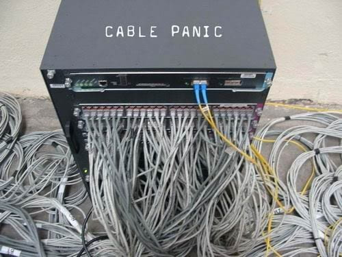

Vamos a comenzar con una de las componentes fundamentales del espacio. Como ya conoces, el espacio tiene dimensión \(3\), por lo que va a contener elementos de dimensión \(2\), de dimensión \(1\) y de dimensión \(0\). Los elementos de dimensión cero ya los conoces, son los puntos que, en el espacio, vienen determinados por tres coordenadas. El punto no tiene largo ni ancho ni altura, su dimensión es cero.

Aquí nos vamos a ocupar de los elementos de dimensión \(1\), las rectas. Si observamos a nuestro alrededor, en seguida podemos identificar alguna recta. La unión de dos paredes, la esquina de un mueble, la finalización de una puerta, son ejemplos que nos pueden servir. También observamos elementos que asimilamos a rectas aunque no lo son. Este puede ser el caso de los cables como los que observamos en la imagen, en la que no siguen rectas ya que su trazado forma curvas pero que, por regla general, los solemos encontrar ordenados siguiendo una recta.
En la naturaleza encontramos ejemplos que podemos llegar a comparar con una recta, aunque debemos recordar que lo que realmente observamos son segmentos, es decir, trozos de recta, ya que una recta no tiene ni principio ni fin.
En este video puedes descubrir algo sobre las matemáticas en la naturaleza: